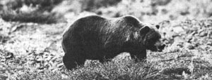

Old Ephraim's Last Stand
The grandest and most powerful living symbol of wilderness America is struggling for survival, including the grizzly bear, who needs bears, the politics of extinction, how to help, hunting.
by David Petersen
March/April 1985
The grandest and most powerful living symbol of wilderness America is struggling for survival.
When Montana's Pulitzer Prize-winning novelist A.B. "Bud" Guthrie Jr. penned The Big Sky -his classic story of the early 1800's fur trade era and of the Indians and mountain men who lived it-he had a definite message in mind: It is our nature to unknowingly, destroy the things we love.
Simply by exercising the unrestrained freedom available to them, the mountain men of Guthrie's novel (and their real-life counterparts) unknowingly helped to destroy the wild country that made their idyllic lifestyle possible: They trapped out the beaver and made serious dents in the populations of many other native American creatures, "civilized" the Indians, and blazed trails for the multitudes of immigrants who would follow in the coming years. And only then-after the harm was irrevocably done-did they stop to look around in confused horror and notice that most of the wild, unfettered frontier they so loved had entered the realm of history.
Fortunately, our forebears didn't consume it all, and even in 1985-some 150 years beyond the heyday of trappers and traders and painted faces-America can still boast of a few precious living symbols of the West as it was when the land was young. And foremost among those symbols of unbridled freedom is Ursus arctoshorribilis- he whom the mountain men referred to respectfully as "Old Ephraim"-the American grizzly bear.
It has been estimated that when Lewis and Clark made their historic trek across wilderness America in the first years of the 1800's, there were as many as 100,000 grizzly bears roaming the unsettled and unspoiled country on the afternoon side of the Mississippi River. Today, the big bruin has lost some 99% of his original range, and his numbers have dwindled to a remnant 800 or so survivors holding forth in small, isolated populations scattered through the mountainous states of Montana, Wyoming, and Idaho, with a few, very few, individuals roaming the mountains of Washington.
Of that estimated 800 remaining grizzlies, Montana boasts approximately 75% of the total . . . along with a corresponding bear's share of grizzly-related problems. Among those problems are sometimes violent encounters between humans and bears in tourist packed Glacier and Yellowstone national a parks, Park Service mismanagement, unprin cipled big-game outfitters, habitat lost to development, sheep grazing on public lands, poaching, and legal hunting.
WHO NEEDS BEARS?
But should America-you and I-even care whether the grizzly bear survives in the lower 48 states? After all, there's a healthy wild population of the big bruin in Alaska, and a sufficient number of grizzlies are incarcerated in zoos around the world to assure, at least for the foreseeable future, that the species won't totally disappear. What's more, there has been an increasing amount of grizzly-related violence in and near Glacier and Yellowstone national parks of late, prompting a spirited and complex "Are our national parks for bears or for people?" argument.
For those reasons and more, some say that the grizzly is a bothersome anachronism-particularly in cases where the animal stands in the way of human economic or recreational ventures (which are often difficult to separate, especially in our national parks).
But the bear isn't without friends. One of the most outspoken is get-out-there-amongst-them grizzly researcher, photographer, and writer Doug Peacock, who pushes aside such anti-grizzly arguments as those above as being "uninformed crap" (and worse).
Although Peacock minces no words when expressing his feelings about the bears and those who would threaten them, most who know the adventuresome former Green Beret would say that he's more than earned the right-by spending a decade of solitary summers actually living among the big bears, between stints as a Glacier Park fire watch-to voice a strong opinion. (Another thing Doug Peacock has earned over the years is the somewhat dubious distinction of having stood his ground in the face of no less than 20 grizzly charges and lived to tell about it.)
Contrary to those who feel threatened by the grizzly's size and reputation for occasional violence-and knowing the great bear as he does-Peacock suggests that it's exactly those intimidating qualities that make the grizzly such a valuable creature to have around. We need Old Ephraim, this modern-day Grizzly Adams believes, precisely because he is big and threatening and occasionally chooses to give no quarter and slug it out rather than turn tail and run at the first whiff of a human.
"Hiking unarmed into Griz country," Peacock reasons, "can provide us with a unique opportunity to experience the humbling power of nature. And in being humbled we're reminded of our original and proper place in the natural world. The grizzly bear offers us one of our very few remaining opportunities to sample a little of the wild and woolly flavor of the American West our forefathers knew."
When confronted with the suggestion that perhaps the fatal grizzly maulings that have occurred in and near Glacier and Yellowstone parks recently might well be taking the "humbling" experience a bit too far, Peacock counters that those areas are the bears' rightful home and that park visitors should remember that they are just that-visitors. People who feel the need for guaranteed safety in the outdoors, Peacock believes, should do their hiking and camping in places where there are no grizzlies which is just about anyplace except Glacier, Yellowstone, and a few other scattered and shrinking redoubts in the mountainous Northwest.
THE POLITICS OF EXTINCTION
But even if we accept the reasoning of Doug Peacock and those who share his conviction that the big bear is unique and well worth saving (and even making a few economic and territorial concessions for) . . . still, is Old Eph actually in sufficient danger of extinction in the lower 48 states to justify curtailing even a small amount of human activity in his favor?
One of the many who think so is Lance Olsen-a stout, easygoing Montanan, who is president of the Great Bear Foundation (GBF).
According to Olsen, the consensus among bear experts is that the grizzly population in the lower 48 states is up against the wall right now. "If a series of important decisions isn't made in favor of the grizzly within the next two to five years," Olsen says, "the American public and the officials who represent us will have signed the grizzly's death warrant. It may take as long as 30 or 35 years until the last of our grizzlies is gone, but our inaction now and in the near future will nonetheless have set the wheels of regional extinction in motion."
What can be done to prevent such a die out? According to Olsen, in order for the grizzly to recover to optimum supportable population levels in the lower 48 states, the bear needs just two things: protection from being killed faster than he can reproduce, and enough habitat in which to live undisturbed.
Unfortunately, satisfying those two basic needs has so far been complicated-and in some cases rendered virtually impossible-by a web of complex problems.
The first (and many bear experts feel foremost) threat to the grizzly arises from the federal government's long-standing policy of permitting sheepmen to graze their flocks on public lands occupied by the bears. Grizzlies have proven their ability and willingness to coexist peaceably with cattle, but not so with sheep. And it's an unwritten law among many sheepherders to shoot bears on sight.
The second major cause of grizzly deaths is a practice shared by various land- and wildlife-management agencies: killing grizzlies in order to tame the wild for people.
Another significant threat to the bear is extensive timber cutting in national forests. In Olsen's words, "We have to impress upon the Forest Service the necessity for moderation and restraint in issuing cutting permits. Some lumbering in grizzly country can be undertaken without harming the bear's ability to make an honest living, as long as it doesn't involve clear-cutting or road building; roads are especially harmful in that they provide easy access for people, and people mean trouble for wildlife."
A problem similar in effect to excess timbering on supposedly multiple-use public lands is energy exploration and development, especially along the Rocky Mountain Front (the east-facing side of the Rocky Mountains in west central Montana). This too results in more roads, more people, less wilderness, and fewer bears.
A step in the right direction for the welfare of the bears-and many feel, for the future of America as well-would be to strictly limit the development of vacation-home and condominium subdivisions in grizzly-occupied cattle ranching country such as the critical Rocky Mountain Front habitat. In addition to his mountain and forest turf, the wide open spaces and varieties of graze that the adjoining ranching country provides are essential to the bear's survival in lean years (a majority of the grizzly's diet is composed of grasses, sedge, forbs, and other succulent graze vegetation). In some areas along the Front, however, creeping subdivision activity has driven out both bears and ranchers.
Tourism-related commercial development in Glacier and Yellowstone national parks-especially the latter-is also a growing threat to the bears. For example, all who are familiar with the shrinking Yellowstone grizzly population (perhaps 130 to 180 bears at the most) agree that Fishing Bridge Campground which is located smack in the middle of grizzly habitat so ancient that the bears are compelled by instinct to visit it frequently-should be closed to prevent further bear-and-camper encounters there.
The Park Service has said that Fishing Bridge Campground will, in fact, be phased out over the next few years, to be replaced by a new motorized-camping area (Fishing Bridge is extremely popular among travel trailer and motor-home campers) located in the less bear-traveled Grant Village area. But so far, even though "replacement" facilities are under construction, there's no sign of any serious intent to close Fishing Bridge Campground.
This lack of action is due in large part to the strenuous opposition to the proposed closing registered by commercial interests in nearby Cody, Wyoming, together with a highly organized lobbying campaign undertaken by recreational vehicle owner groups. (Ironically, those motorized park visitors clamoring for more development might someday find themselves caught on the horns of novelist Guthrie's "we've destroyed what we came here to enjoy" dilemma.)
"No one is saying that people shouldn't be allowed to enjoy our national parks," GBF president Olsen is careful to explain, "only that the Park Service should ease up on development, especially as it relates to motorized tourism."
Another development-related problem is exemplified by Ski Yellowstone, a huge winter resort complex proposed to be built on Forest Service land adjacent to the park and just north of the town of West Yellowstone, Montana. The development would bring an influx of people while simultaneously destroying large areas of important grizzly habitat bordering the park.
TO HUNT OR NOT TO HUNT?
One of the most visible points of controversy over the bears arises from Montana's legal grizzly-hunting season. While most outfitters, guides, and hunters are in favor of continuing the annual limited-kill hunt, others, including national conservation organizations such as Defenders of Wildlife, are strongly in favor of halting all hunting of the big bears.
Probably the most popular argument in favor of continuing a limited grizzly-hunting program is that hunting instills fear of humans in the bears, thus reducing problematic encounters.
This hunting-instilled fear of people may account, so the theory goes, for the fact that there have been no unprovoked grizzly attacks in areas where the bears are hunted (such as the Bob Marshall ecosystem, which is home to a larger number of grizzlies than any other area in the lower 48 states), while the frequency of attacks has steadily increased in Glacier and Yellowstone parks, where hunting has long been prohibited.
Doug Peacock, drawing on his broad per sonal experience with the park bears, feels, however, that this prohunting argument is weak. "The park bears are hunted," he says. "Not only-by park personnel and poachers within Yellowstone itself, but, when the bears range into the national forests and private lands surrounding the parks-which they do on a regular basis-they're also vulnerable to trigger happy sheepherders, unscrupulous outfitters, and black bear hunters who can't tell the difference between the two species."
The bottom line of Peacock's rebuttal of the "hunting teaches bears to fear humans" argument rests on a philosophy he developed as a Special Forces combatant in Vietnam: "Death is a poor learning experience."
Despite their differing views on the hunting question, Peacock and Olsen agree that the concentration of grizzly encounters in and near the parks is not due to the bears losing their natural fear of humans, but to the fact that there are so many people in the parks these days. Bears and humans are much more scattered and thus insulated from each other in the less roaded expanses of the non park national forests and wilderness areas.
A related problem is what many see as Park Service mismanagement in dealing with "problem" bears-which far too often ends in the execution of the accused bruin.
Demonstrating objectivity, however, these same critics also feel that the federal government should severely reduce or even eliminate the Park Service's tort liability for bear incidents. If a visitor is injured in a grizzly encounter in Glacier or Yellowstone, the Park Service feels pressured to trap and relocate-or kill-the suspected bear in order to show "good faith" and minimize its liability. Consequently, if visitors weren't allowed to bring civil actions against the Park Service for bear incidents, that agency would be under less pressure to kill and manhandle the grizzlies charged to its care.
"Besides," adds Doug Peacock, "in the vast majority of human-and-bear confrontations, people could have avoided trouble if they'd known what to do and had the courage to do it. It's inappropriate human action that most often elicits attack responses from bears-not some instinctive grizzly blood lust."
BUT NOTALL THE NEWS IS BAD
While it might seem that any situation where grizzlies and people attempt to coexist is destined to end in conflict, there is evidence to indicate that it doesn't have to be that way. An example of cooperation between the two species comes from the rolling grass lands and brushy foothill country of Montana's Rocky Mountain Front-and more specifically, from the private ranchlands surrounding a grizzly paradise called the Pine Butte Swamp (owned by the Nature Conservancy) near the town of Chateau. The Pine Butte Swamp and a few smaller aspen and cottonwood bogs along the Rocky Mountain Front are the only areas in the lower 48 states where the grizzly still regularly frequents the open plains.
Both ranchers and bears seem to have adapted to the situation, with neither causing the other much trouble. The grizzlies are most active at night and rarely kill or disturb the livestock that freckle the face of the foothill plains. And the ranchers are hardworking folk who keep regular hours and have predictable habits. The bears know the ranchers, the ranchers know the bears, and problems are rare.
At least, problems are rare most of the time. On a few occasions recently, grizzlies have taken a few sheep or even an occasional cow, and all is suddenly less than quiet on the Front.
When this happens-as it did this past fall-motivation for the sheep killings can usually be traced to extenuating circumstances, such as an early snowstorm that destroys berries and other traditional pre-hibernation foods essential to the bears' survival . . . or to some form of unintentional baiting of the bears, such as locating a "boneyard" (a spot where the carcasses of dead livestock are dumped to rot) too near an area where sheep are kept. In this scenario, the smell of decaying meat catches the attention of hungry grizzlies, the bears spot the sheep while following their noses to the boneyard-and suddenly, quite without premeditation or aforethought, the blue plate special changes from carrion to leg of lamb.
Traditionally, when the bears have occasionally been forced by the threat of starvation to prey on livestock, the dominant feeling among area ranchers has been to look the other way. But hard economic times have fallen on western ranchers to the point where, for some, the loss of even a few head of stock can make the difference between staying in the saddle or biting the bitter dust of bankruptcy.
In such cases, the ranchers can see only two choices: to be reimbursed for stock lost to bears . . . or to fall back on the Code of the West and (quite illegally) gun down the rustlers.
The Great Bear Foundation doesn't want to see any of the many ranchers who willing ly share their land with Old Eph forced to take such drastic action. So it's implementing a "rancher reimbursement" program to accept tax-deductible contributions and then distribute the money to private (as opposed to public-lands) ranchers who can verify losses from grizzly predation (and who can show that there was no contributing negligence on their part).
GBF president Olsen feels that this type of program is among the most important activities that can be undertaken to help the bears, since, in his words, "The grizzly's fate is in the hands of the locals. Their feelings about the bear are critical."
IS IT DOWN TO "BEARS OR BUTTER"?
The contention that "The grizzly's fate is in the hands of the locals" holds true for non ranching bear-country residents as well. Trouble is, lots of folks in the Rocky Mountain north have been given to believe that protecting the grizzly and the wilderness he lives in will result in curtailed logging and mining, slowed economic development, and, consequently, fewer and less-lucrative jobs.
When that problem was put to Olsen, he responded that in the Northwest, as in many other parts of the country today, people are apprehensive about their futures. "They're worried about jobs and security and so are inclined to believe anything some developer or corporate public relations person comes along and tells them. But in fact, it's not necessary to the economic well-being of the American people to compete with the bear for use of the limited land left available for his survival. If our natural resources are carefully managed, and harvested wisely, we can-to paraphrase an expression used by economists-have both bears and butter."
THE CHOICE IS OURS
Although the grizzly is not in immediate danger of total extinction-but only of being wiped from the lower 48 states (with Canada not far behind, given the continuation of current trends)-many concerned Americans feel that if we allow the magnificent bruin to disappear from our land at the behest of the money changers, we'll be not only sacrificing our country's most impressive wild creature, but relinquishing as well a significant part of our American heritage and national pride.
Writing in the July 24, 1983, issue of Parade magazine, the sapient octogenarian A.B. Guthrie Jr.-whose thoughts opened this es say and run like an invisible thread through any intelligent discussion of mankind's use and misuse of nature's gifts-concluded a requiem for his friend and neighbor the grizzly with these personal observations:
Despite all these efforts on behalf of the bear, men who are not so optimistic predict that he will be gone from the lower 48 states in the next 35 years. If they are right, there will have disappeared from our wilds the grandest animal Americans have known. And old men, their eyes lost in the past, will be saying, "I remember . . ."
But it doesn't have to end that way . . . not if all the bear's friends act now to see that it doesn't.
EDITOR'S NOTE: The Great Bear Foundation is an organization dedicated to educat ing both policymakers and the public on matters concerning the plight of all species of bears, and to raising money to fund groups and programs aimed at seeing that Old Ephraim and his kin remain among the living. Additionally, GBF publishes a quarterly newspaper, Bear News. (GBF has offered to send MO THER's readers a free sample copy of Bear News, but since the organization's resources are limited, please don't take them up on the offer unless you're seriously interested in joining, contributing, or otherwise helping to save the grizzly. Also, enclosing at least a dollar would be a friendly gesture and would help defray printing and postage costs.)
All donations to the Great Bear Foundation are tax deductible. Individual GBF memberships are $12 and include a one-year (four-issue) subscription to Bear News. For more information, write the Great Bear Foundation, P.O. Box 2699, Missoula, MT 59806.
For Those Who Wish to Help
Lance Olsen
If you'd like to register your support for America's grizzlies . . . write . Letters are extremely important; they show that you care enough to take a few minutes out of your day to sit down with pen and paper and speak your mind.
Your best bets for getting action seem to be Congress and the Interagency Grizzly Bear Committee (IGBC). The latter is a group that includes representatives from the U.S. Forest Service, the U.S. Fish and Wildlife Service, and the Bureau of Land Management, plus the directors of the wildlife agencies of the grizzly states: Montana, Wyoming, Idaho, and Washington. And even though it's represented in the IGBC, the Forest Service is worth a separate letter, since it manages 63% of all grizzly habitat in the lower 48 states.
If you do write, the Great Bear Foundation would appreciate seeing a copy of your letter, or a copy of any reply you receive.
Here are the addresses of those the GBF recommends writing on behalf of the grizzly bear:
Interagency Grizzly Bear Committee
c/o Regional Forester
USDA, Forest Service
P.O. Box 25127
Lakewood, CO 80225
(Your Senator)
United States Senate
Capitol Building
Washington, DC 20510
(Your Representative)
U.S. House of Representatives
Capitol Building
Washington, DC 20515
Max Peterson
Chief, Forest Service
Washington, DC 20250
 |
 |
|